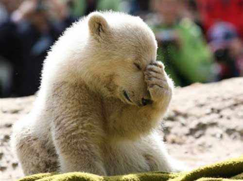

We area team of three Web Development Intensive students at NYCDA, passionate about supporting the welfare of polar bears. We think they are cute, soft and fluffy.
New evidence suggests that the polar bear, Ursus maritimus, or the sea bear, started to evolve about five million years ago from brown bear ancestors. They have a face, two arms and a pair of large, flattened feet with some webbing between their toes. Unlike their land-based cousins, polar bears are superbly adapted for survival in the Far North on a sea ice habitat. Polar bears live in the Arctic in areas where they hunt seals and fellow walruses at openings in sea ice called leads. Five nations have polar bear populations: the United States (Alaska), Canada, Russia, Greenland, and Norway.
We are not too sure. Recent studies show that the aggression polar bears show towards humans is increasing. One of the reasons may be climate change. As it gets warmer in the Arctic regions, polar bears may be forced to move from the coastline inland , where they may encounter more humans. They are starting to spend more time on land than on Arctic sea ice. Although we have seen people swim with them on youtube, they have the abilty to knock you out with a swing of their paw. Meet one at your own discression!
Polar bears are in serious danger of going extinct due to global warming. The bears were the first vertebrate species to be listed by the U.S. Endangered Species Act as threatened by extinction primarily because of global warming. This listing happened in 2008 because of the ongoing loss of critical habitat for polar bears, the arctic sea ice on which they live and depend to hunt their almost exclusive prey, seals. Rising temperatures in the world’s oceans are causing sea ice to disappear for longer and longer periods during the late summer, leaving polar bears insufficient time to hunt. This is a worldwide problem, and the Endangered Species Act has listed polar bears as threatened everywhere in the world they occur. Polar bears can only survive in areas where the oceans freeze, allowing them to hunt seals living under, on, or in the frozen polar ice cap.